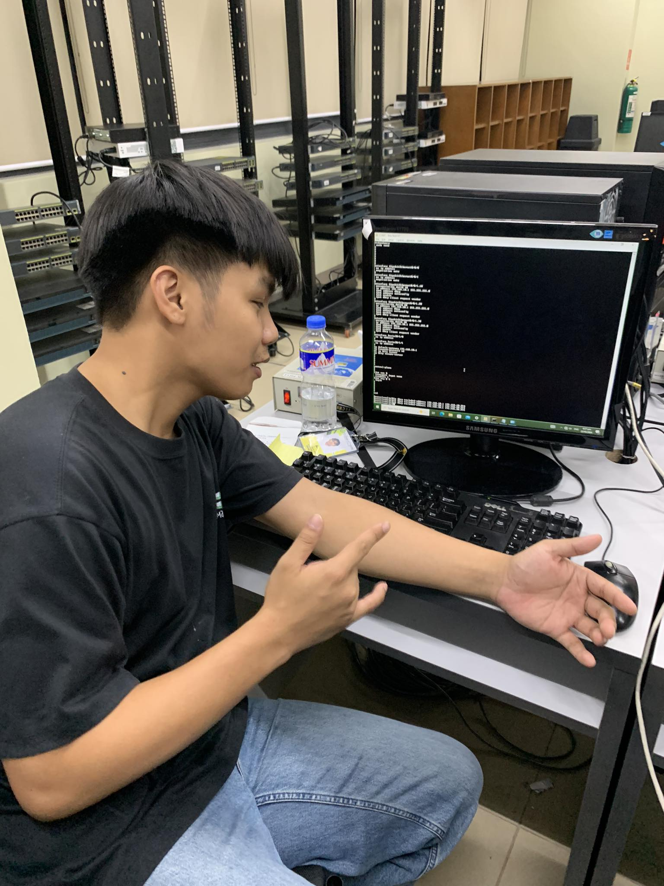

Clifford Psalm Orfanel
BSITBA
I am currently a second-year student at FEU Institute of Technology, pursuing a Bachelor of Science in Information Technology with a focus on Business Analytics. As an enthusiastic and aspiring IT professional, I am excited to explore the constantly changing and dynamic realm of technology.
